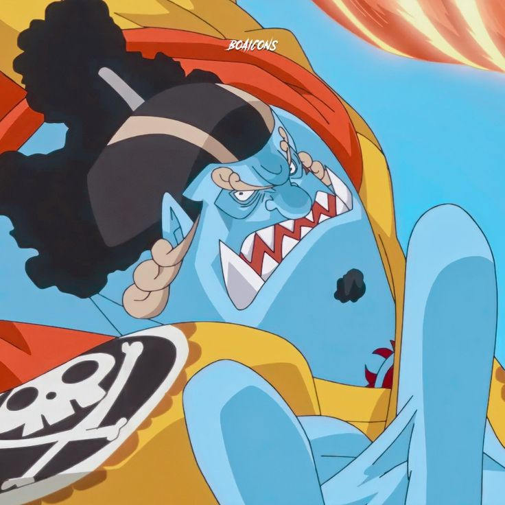

Jinbe
"Cavaleiro do Mar" Jinbe é o timoneiro dos Piratas do Chapéu de Palha. Ele é o décimo membro da tripulação e o nono a se juntar, fazendo isso durante o Arco País de Wano. Antes e durante a guerra, Jinbe fez amizade com Monkey D. Luffy e dois anos depois aliou-se a ele e sua tripulação para evitar o golpe de estado dos Novos Piratas Homens-Peixe contra o Reino Ryugu da Família Real de Neptune. Luffy posteriormente o convidou para se juntar aos Piratas do Chapéu de Palha, mas Jinbei adiou até romper os laços com Big Mom durante o Arco Ilha Whole Cake.